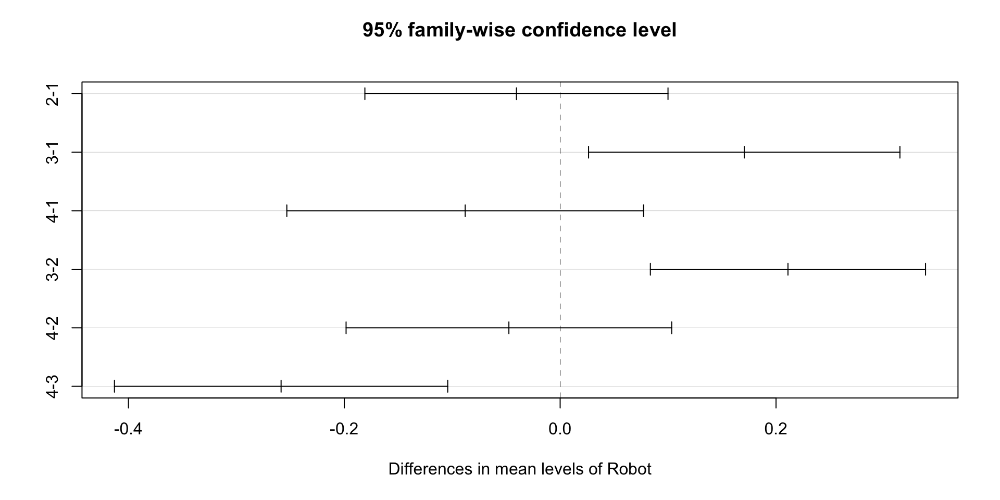

Chapter 5 Design of Experiments
5.1 Introduction to experimental design
An experimental design is a plan and a structure to test hypothesis in which the researcher either controls or manipulates one or more variables.
It contains independent and dependent variables.
In an experimental design, an independent variable may e either a treatment variable or a classification variable.
A treatment variable is a variable the experimenter controls or modifies in the experiment.
A classification variable is some characteristic of the experimental subjects that was present prior to the experiment and is not a result of the experimenter’s manipulations or control.
Independent variables are sometimes referred to as factors.
Each independent variable has two or more levels, or classifications.
Levels, or classifications, of independent variables are the subcategories of the independent variables used by the researcher in the experimental design.
The other type of variable in an experimental design is a dependent variable.
A dependent variable is the repose to the different levels of the independent variables.
It is the measurement taken under the conditions of the experimental design that reflect the effects of the independent variables(s).
5.2 Analysis of Variance (ANOVA)
Experimental design in this chapter are analysed statistically by a group of techniques referred to as analysis of variance or (ANOVA)
The analysis of variance concepts begin with the notion that individual items being studied, such as employees, machine-produced products, district offices, hospitals ad so on, are not all the same.
5.3 The completely randomized design (one-way ANOVA)
One of the simplest experimental designs is the completely randomized design.
In the completely randomized design, subjects are assigned randomly to treatments.
The complete randomized design contains only one independent variable, with two or more treatment levels, or classifications.
If only two treatment levels, or classifications, of the independent variable are present, the design is the same one used to test the difference in means of two independent populations presented in Chapter 3.
In this section we will focus on completely randomized designs with three or more classification levels.
Analysis of variance, or ANOVA will be used to analyse the data that result from the treatments.
Example
As an example of a completely randomized design, suppose a researcher decided to analyse the response time of four autonomous mobile robots.
- What is the independent variable in this design? Autonomous mobile robot
Now the four autonomous mobile robots are the levels of treatment, or classification of the independent variable
- What is the dependent variable in this design? Response time
- Is there a significant difference in the mean response time of 24 tasks carried out by the four autonomous mobile robots?
library(tidyverse)
data <- data.frame(
Robot = as.factor(c(rep(1,5), rep(2,8), rep(3,7), rep(4,4) )),
Reponse_time = c(6.33, 6.26, 6.31, 6.29, 6.40, 6.26,
6.36, 6.23, 6.27, 6.19, 6.50, 6.19,
6.22, 6.44, 6.38, 6.58, 6.54, 6.56,
6.34, 6.58, 6.29, 6.23, 6.19, 6.21 ) )
data## Robot Reponse_time
## 1 1 6.33
## 2 1 6.26
## 3 1 6.31
## 4 1 6.29
## 5 1 6.40
## 6 2 6.26
## 7 2 6.36
## 8 2 6.23
## 9 2 6.27
## 10 2 6.19
## 11 2 6.50
## 12 2 6.19
## 13 2 6.22
## 14 3 6.44
## 15 3 6.38
## 16 3 6.58
## 17 3 6.54
## 18 3 6.56
## 19 3 6.34
## 20 3 6.58
## 21 4 6.29
## 22 4 6.23
## 23 4 6.19
## 24 4 6.21## # A tibble: 4 x 2
## Robot count_poison
## <fct> <int>
## 1 1 5
## 2 2 8
## 3 3 7
## 4 4 4- Compute the mean and standard deviation for each level of the treatment
# You can check the level of the robots with the
# following code. You should see three character
# values because we converted it to factor variable
levels(data$Robot)## [1] "1" "2" "3" "4"data %>%
group_by(Robot) %>%
summarise(
count_robots = n(),
mean_time = mean(Reponse_time, na.rm = TRUE),
sd_time = sd(Reponse_time, na.rm = TRUE)
)## # A tibble: 4 x 4
## Robot count_robots mean_time sd_time
## <fct> <int> <dbl> <dbl>
## 1 1 5 6.32 0.0526
## 2 2 8 6.28 0.105
## 3 3 7 6.49 0.101
## 4 4 4 6.23 0.0432- Graphically check if there is a difference between the distribution.
p <- ggplot(data, aes(x = Robot , y = Reponse_time, fill = Robot)) +
geom_boxplot() +
geom_point()
overall_mean <- mean(data$Reponse_time)
p + geom_hline(yintercept = overall_mean)
- Use one-way ANOVA test to determine whether there is a significant difference in the mean response time of the four autonomous mobile robots .
The basic syntax for an ANOVA test is
aov(formula, data) Arguments:
- formula: The equation you want to estimate - data: The dataset usedThe syntax of the formula is:
y ~ X1+ X2+...+Xn
X1+ X2+...+Xnrefers to the independent variables
Write the hypothesis to be tested
Use the p-value to reach a statistical conclusion
# Run the ANOVA test
anova_one_way <- aov(Reponse_time~Robot, data = data)
# Print the summary of the test
summary(anova_one_way)## Df Sum Sq Mean Sq F value Pr(>F)
## Robot 3 0.2366 0.07886 10.18 0.000279 ***
## Residuals 20 0.1549 0.00775
## ---
## Signif. codes: 0 '***' 0.001 '**' 0.01 '*' 0.05 '.' 0.1 ' ' 1The p-value is lower than the usual threshold of 0.05.
You are confident to say there is a statistical difference between the groups, indicated by the \(*\).
5.4 Pairwise comparison
The one-way ANOVA test does not inform which robot (group) has a different mean.
Instead, we can perform a Tukey test with the function
TukeyHSD().
comparison <- TukeyHSD(anova_one_way)
#There are print and plot methods for class "TukeyHSD"
print(comparison)## Tukey multiple comparisons of means
## 95% family-wise confidence level
##
## Fit: aov(formula = Reponse_time ~ Robot, data = data)
##
## $Robot
## diff lwr upr p adj
## 2-1 -0.0405000 -0.18093243 0.09993243 0.8502854
## 3-1 0.1705714 0.02633255 0.31481031 0.0169205
## 4-1 -0.0880000 -0.25324639 0.07724639 0.4613461
## 3-2 0.2110714 0.08358107 0.33856179 0.0008519
## 4-2 -0.0475000 -0.19834863 0.10334863 0.8144408
## 4-3 -0.2585714 -0.41296992 -0.10417294 0.0007541
Multiple comparison
- Multiple comparisons are to be used only when the analysis of variance yields an overall significant difference in the treatment means.
Tukey’s test
- In analysis of variance, this technique is used for pairwise a posterior multiple comparisons to determine if there is a significant differences between the means of any pair of treatment levels in an experimental design.